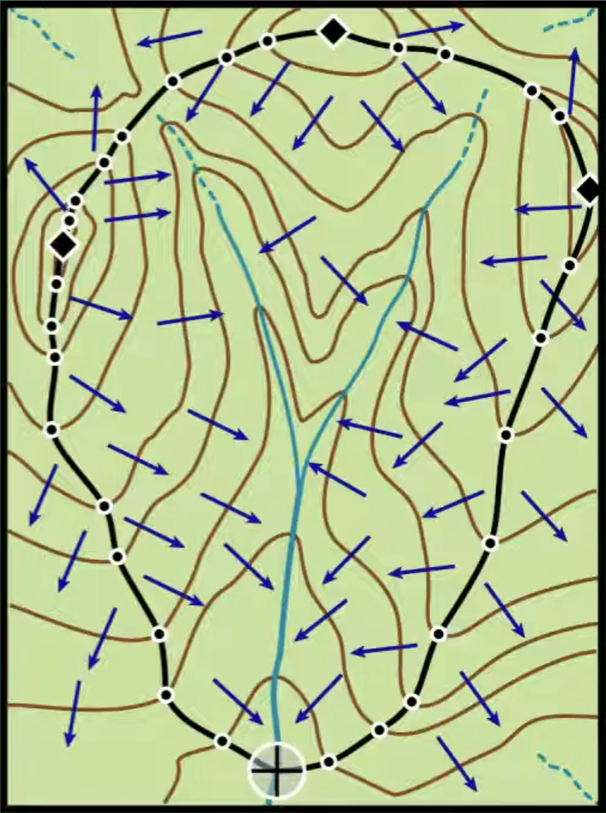

The hydrological cycle refers to the continuous movement of water between the atmosphere, land surface, and subsurface environments. It operates through various physical processes that transfer water in different phases (solid, liquid, gas) and between various reservoirs (e.g., ocean, land, air, vegetation, soil, groundwater).
At the global scale, the hydrological cycle is primarily driven by:
Evaporation from oceans and land surfaces
Condensation and precipitation of atmospheric moisture
Runoff and infiltration returning water to surface and subsurface systems
At the catchment scale, the same processes are present but modified by local topography, vegetation, and human activity. For example, precipitation may be intercepted by vegetation, infiltrate into soils, recharge groundwater, or run off into rivers. The water balance equation is used to quantify water inputs (precipitation), outputs (evaporation and runoff), and changes in storage.
Key processes:
Evaporation/Transpiration – return water to the atmosphere.
Precipitation – delivers water to land and sea surfaces.
Runoff and Infiltration – control how water moves through the landscape.
These processes connect global atmospheric dynamics to local water availability, influencing ecosystems, agriculture, and water resource management.
Water Balance in a Semi-Arid Basin
In a semi-arid basin, the water balance is typically characterised by:
Low precipitationP: Rainfall is infrequent and often seasonal, leading to dry conditions most of the year.
High evaporationE: Hot temperatures and sparse vegetation lead to significant moisture loss from soil and surface water.
Minimal runoffQ: Surface runoff may be rare and occur only during intense rainfall events (flash floods).
Storage changes\Delta S: Soil moisture and groundwater can vary substantially, often declining during dry seasons.
Challenges in this setting:
Spatial variability: Rainfall can be highly uneven across the basin.
Temporal mismatch: Rainfall may occur in short, intense events, but monitoring is typically done at daily or monthly scales.
Estimating \Delta S: Soil moisture and groundwater data are often sparse or missing.
Evapotranspiration estimation: Requires reliable climate and vegetation data, which may not be available.
Hydrologists in these regions must rely on sparse observations, remote sensing, and models to estimate each term in the water balance.
Global water distribution
Stumm’s statement is theoretically true — there is enough total freshwater globally to meet human needs. However, the key issue is that this water is not evenly distributed nor equally accessible.
From the data:
\approx 97% of Earth’s water is saline (oceans).
Most freshwater is locked in ice caps and groundwater.
Only ** \approx 0.27%** is accessible surface freshwater.
This limited supply is unevenly distributed:
Iceland has >500,000 m^3 / person / year, while Kuwait has virtually none.
Climate patterns (e.g., arid zones), topography, and land use create disparities in availability.
Australia has relatively high per-capita water resources but with extreme variability over space and time.
Hydrology addresses this challenge by:
Quantifying water inputs and outputs using models and data.
Understanding flow and storage dynamics (e.g., runoff generation, infiltration).
Supporting water resource planning and sustainable abstraction.
The applied side of hydrology — including engineering, remote sensing, and policy support — helps ensure equitable distribution, even in regions of scarcity.
Delineating a Watershed Boundary
Manual Delineation Steps:
Identify the outlet point on the stream.
Draw/visualise surface flow lines perpendicular to contours.
Identify high points (ridges) around the stream.
Trace contour segments that divide flow toward or away from the stream.
Connect these divide points to form a continuous watershed boundary.
Application to the Map:
The outlet point is located near the centre-bottom of the figure, where the stream exits the valley.
Flow lines run downhill perpendicular to contours; valleys are V-shaped pointing upstream.
The northern and western ridgelines show closely spaced contours curving outward — this is the high ground.
The watershed boundary follows these ridgelines, tracing the outermost contours that direct flow inward.
I would connect the ridge to the east, sweep around the top of the catchment (north), and close the loop along the western slope down to the outlet.

A hypothetical topographic map of a catchment
Importance of Topographic Divides:
Contours that form convex curves at high elevation mark the watershed edge.
Flow cannot cross these divides; they are the “roof ridges” of the landscape.
Knowing the perpendicular relationship between flow direction and contours is essential to tracing accurate boundaries.
Limitation:
Manual delineation is slow, subjective, and less precise in flat or complex terrain.
Digital methods allow for scalable, reproducible watershed mapping using DEMs and flow algorithms.
Extra: Digital Delineation of Watersheds using the D8 Method
Digital watershed delineation is typically performed using a Digital Elevation Model (DEM), which provides a grid of elevation values over a landscape. One widely used algorithm for calculating flow direction is the D8 method (Deterministic Eight).
Step-by-step Procedure
Fill Sinks
DEMs may contain local depressions or pits (sinks) that disrupt flow modelling.
These are removed or filled to ensure water can flow continuously downslope.
Algorithms typically raise the elevation of the sink to the lowest spillover point surrounding it.
Compute Flow Direction (D8 Algorithm)
For each cell in the DEM, the algorithm compares the elevation to its eight neighbours (N, NE, E, SE, S, SW, W, NW).
Flow is assigned in the direction of steepest downslope (maximum drop in elevation per unit distance).
Each cell can only drain into one of the eight directions (hence, deterministic).
Compute Flow Accumulation
Starting from the headwater cells (no inflow), accumulate the number of upstream cells draining into each cell.
This identifies stream channels and the drainage network structure.
Select an Outlet
The user defines an outlet (pour point) — usually at a stream junction or known outflow.
Watershed Delineation
Starting from the outlet, trace upstream through the flow direction grid.
All cells that drain to the outlet are included in the watershed.
Notes on Implementation
The D8 algorithm is simple and fast but can produce unrealistic straight-line drainage paths on flat or complex terrain.
Other flow direction algorithms distribute flow among multiple downslope neighbours, improving realism in some settings.
Visual Summary
Cell
Flow Direction
Description
A
E
Flows to the cell to the East
B
SE
Flows to the cell to the SE
Each cell in a D8 flow direction grid is encoded with a value (e.g. 1–128) representing the compass direction. Here’s a common encoding scheme:
Direction
Code
E
1
SE
2
S
4
SW
8
W
16
NW
32
N
64
NE
128
Example Tools and Libraries
Python: see pyshedsGitHub. You can also use numpy, scipy.ndimage, or richdem for DEM manipulation.
GIS Software: QGIS, ArcGIS provide built-in tools for watershed delineation.